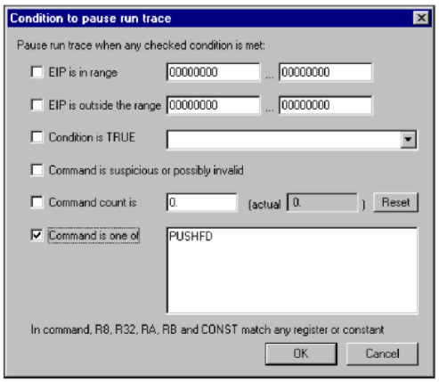
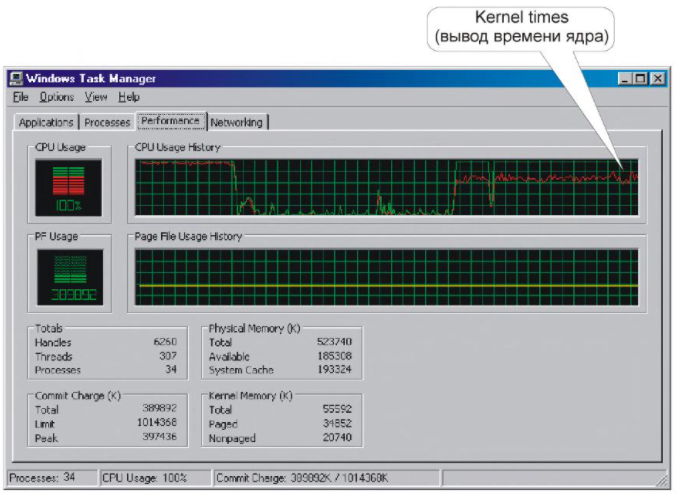
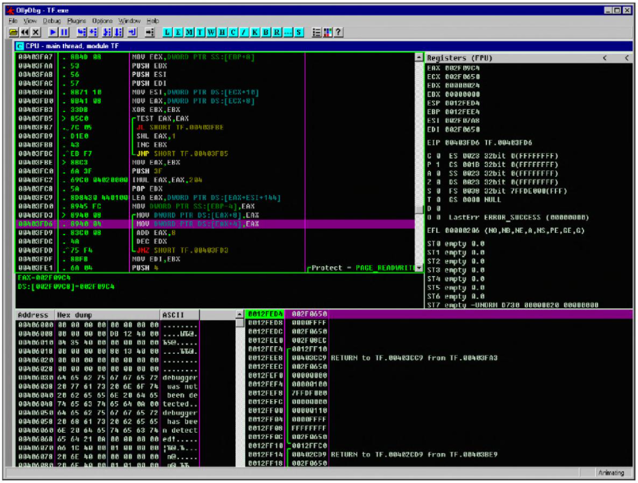
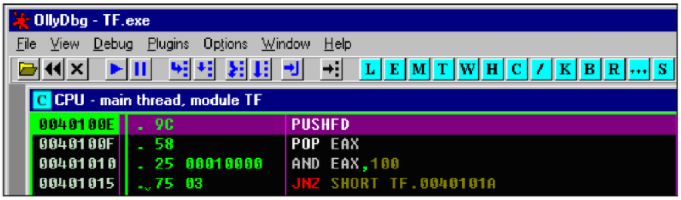
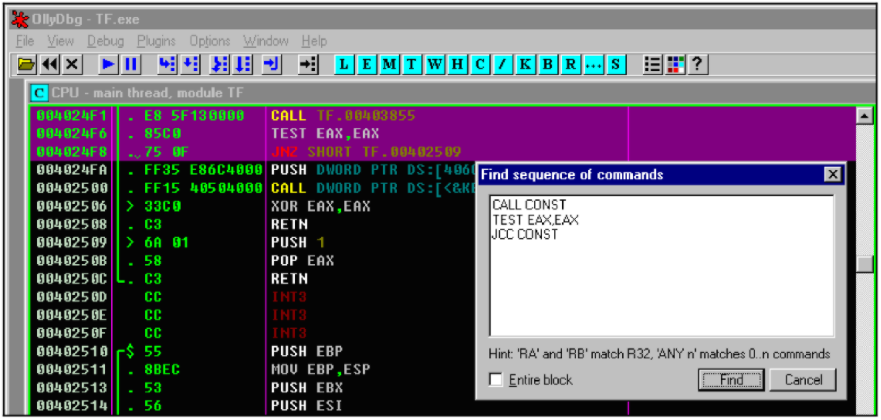
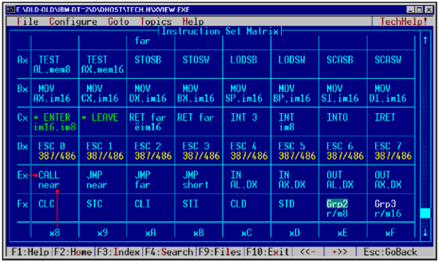
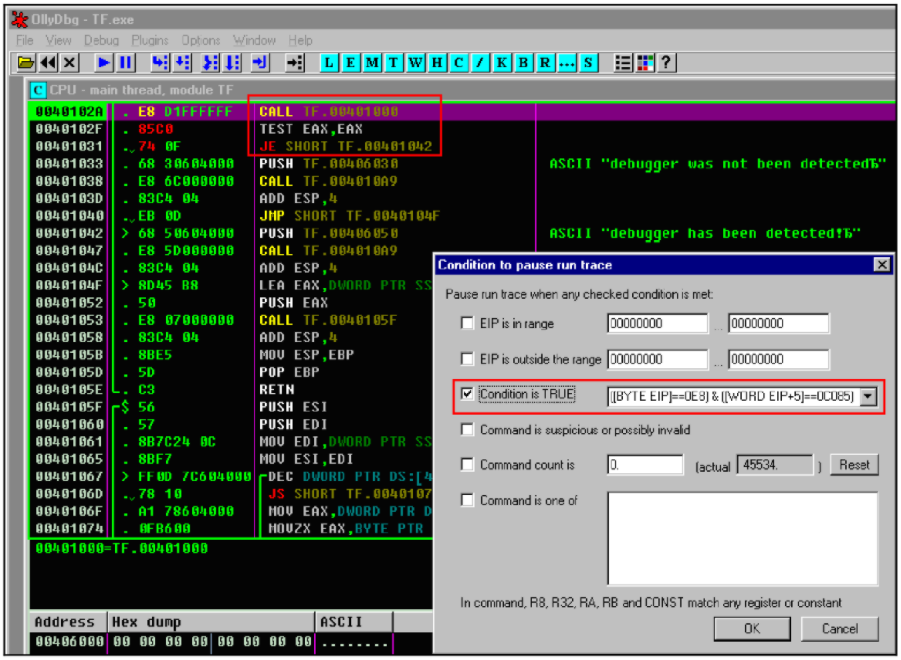

Хакерские трюки или как поставить бряк на jmp eax
Крис Касперски ака Мыщъх
Кодокопатели достаточно часто сталкиваются с необходимостью установить точку останова на произвольную машинную команду (например, jmp eax). форумы буквально пестрят вопросами, но x86-процессоры не предоставляют такой возможности и приходится действовать обходим путем, о существовании которого догадываются многие, но находит далеко не каждый
Введение или зачем это нужно
Точки останова — мощное оружие против защищенных программ и в умелых руках они поражают цель с любого расстояния. Основных режимов стрельбы всего три — останов при чтении, записи и выполнении памяти по заданному адресу. А как быть, если адрес неизвестен, но мы знаем его содержимое? Допустим, нам захотелось установить точку останова на введенный пароль или команду JMP EAX, используемую некоторыми распаковщиками для передачи управления на оригинальную точку входа (она же OEP). Или вот мы хотим брякнуться на последовательность машинных команд: CALL XXX/TEST EAX,EAX/JX, соответствующую следующей конструкции языка высокого уровня: "if (xxx(,,,) == 0)…". Команда CALL $+5 POP REG характерна для защитных механизмов, балующихся с самомодифицирующимся кодом или копирующих себя на стек. Инструкция PUSHFD присутствует в самотрассирующихся программах и антиотладочных защитных механизмах.
Существуют и другие устойчивые шаблоны, то есть предсказуемые последовательности машинных команд, расположенные в окрестностях защитного механизма или даже внутри него самого. Если бы мы только могли устанавливать точку останова на заданную машинную команду, расположенную по произвольному адресу… Но увы, отладчику нужен адрес, который нас интересует не меньше его.
Лишенные аппаратной поддержки со стороны процессора, в общем виде эту задачу мы решить не можем, но и расписываться в собственном бессилии тоже не собираемся. Существует несколько более или менее эффективных методик, дающих вполне удовлетворительный результат, о которых мыщъх и собирается рассказать
Секреты пошаговой трассировки
Отладчик OllyDbg поддерживает условные точки останова, позволяющие в том числе брякаться и на команду (чего не умеет soft-ice), но... как именно он это делает? Очень просто — трассирует программу и на каждом шаге проверяет истинность одного или нескольких условий, заданных хакером. Это очень мощный механизм (Olly зовет его "condition to pause run trace" – условие прекращения трассировки), позволяющий устанавливать точки останова на любую комбинацию команд, регистров и/или данных, однако, страдающей целой кучей побочных эффектов и ограничений. В режиме трассировке скорость выполнения программы замедляется в сотни (!) раз, к тому же факт трассировки очень легко обнаружить, чем защитные механизмы и занимаются.
Среди множества антиотладочных приемов, чаще всего встречается чтение регистра флагов конструкцией PUSHFD/POP REG с последующей проверкой бита трассировки (TF) – взведен он или нет. Отладчик Microsoft Visual Studio Debugger выдает свое присутствие сразу, но OllyDbg за просто так не проведешь! Если в процессе трассировки программы он обнаруживает инструкцию PUSHFD, он очищает бит трассировки после ее выполнения, скрывая свое присутствие. Однако, этот трюк разваливает самотрассирующие программы, к тому же существуют и другие антиотладочные приемы, с которыми Olly не справляется, поэтому, защитный код приходится разминировать ### обезвреживать вручную, а для этого необходимо уметь ставить точки останова на определенные комбинации машинных команд. Атиотладочных приемов не так уж и много, они хорошо известны как хакерам и разработчикам и если только разработчики не выдумают чего-то принципиального нового (что навряд ли), мы легко победим любую защиту, какой бы сложной и навороченной они ни была.
Первые шаги или установка точки останова на одну команду
Начнем с простого. Возьмем демонстрационный пример TF.exe и попытаемся брякнуться на команду PUSHFD. Загружаем программу в отладчик, в меню "debug" выбираем "set condition" или нажимаем <CTRL-T>. На экране появляется симпатичное диалоговое окно "condition to pause run trace" (см. рис. 1), позволяющее обрывать трассировку при выходе регистра EIP за определенный диапазон ("EIP is in range") или, наоборот, при входе в него ("EIP is outside the range"). Так же поддерживается останов по срабатыванию некоторого условия ("condition is TRUE") или выполнению одной из следующий команд ("command is one of"). Как раз это нам и нужно!

Рисунок 1 - Диалоговое окно отладчика OllyDbg, позволяющее устанавливать точки останова на произвольные машинные команды
Вводим в окно редактирования "PUSHD" (ес-но без кавычек), взводим соседствующию с ним галочку и говорим "OK". Диалоговое окно исчезает и мы возвращаемся в OllyDbg. Если теперь нажать <F9> (run), то... ничего не получится, поскольку условные точки останова работают _только_ в режиме трассировки, поэтому мы жмем <CTRL-F11> (debug à trace into). Экран отладчика остается неизменным и кажется, что ничего не происходит, только в правом нижнем углу строки статуса появляется надпись "tracing", подтверждающая, что трассировка идет полным ходом и сильно загружает ядро операционной системы.
Рисунок 2 - Надпись в строке статуса, свидетельствующая о том, что отладчик работает в режиме трассировки
Если во время трассировки нажать <CTRL-SHIFT-ESC> (комбинация, вызывающая "диспетчер задач"), мы увидим извилистую красную кривую (см. рис. 3), сигнализирующую о необычно высоком уровне активности отладчика (если красной кривой нет, взведите галочку "вывод времени ядра" в меню "вид").

Рисунок 3 - В режиме трассировки OllyDbg сильно загружает осевое ядро
Если вместо <CTRL-F11> нажать <CTRL-F7> ("animate into"), то скорость трассировки упадет в десятки раз, но зато OllyDbg будет обновлять окно CPU на каждом шагу, подсвечивая текущую выполняемую команду курсором (см. рис. 4). Выглядит очень красиво (особенно интересно наблюдать за циклами), но для практической работы оно непригодно. Прервать трассировку (как анимационную, так и обычную) можно в любой момент клавишей <ESC>, при этом отладчик остановится на последней выполненной инструкции.

Рисунок 4 - Анимированная трассировка в OllyDbg (в правом нижнем углу строки статуса горит "animating")
Если же вести трассировку до победоносного конца, то спустя некоторое время (определяемое в первую очередь мощностью вашего ЦП), отладчик остановится на инструкции PUSHFD (см. рис. 5). Это и есть "сердце" защитного механизма, который нам предстоит проанализировать и обезвредить.

Рисунок 5 - Остановка отладчика по срабатыванию точки останова на команду PUSHFD
Антиотладочный код предельно прост и укладывается всего в четыре строки (см. листинг 1):
0040100E |. 9C PUSHFD
0040100F |. 58 POP EAX
00401010 |. 25 00010000 AND EAX,100
00401015 |. 75 03 JNZ SHORT TF.0040101A
Листинг 1 - Антиотладочный код, основанный на чтении регистра флагов
Защита заталкивает в стек регистр флагов командой PUSHFD и тут же выталкивает его в EAX, проверяя бит трассировки логической операцией AND EAX 100h. Только никакого бита трассировки в стеке ни хрена не окажется — OllyDbg автоматически удалит его, но чтобы программа работала и под другими отладчиками, необходимо заменить JNZ на NOP/NOP или AND EAX, 100h на AND EAX, 0h.
Если немного потрассировать программу, мы выйдем из антиотладочной процедуры и попадем в довольно типичный для высокоуровневых программ машинный код, проверяющий значение, возращенное функций, с помощью пары инструкций TEST EAX,EAX/Jx (см. листинг 2):
0040102A |. E8 D1FFFFFF CALL TF.00401000
0040102F |. 85C0 TEST EAX,EAX
00401031 |. 74 0F JE SHORT TF.00401042
00401033 |. 68 30604000 PUSH TF.00406030; ASCII "debugger was not been detected"
00401038 |. E8 6C000000 CALL TF.004010A9
0040103D |. 83C4 04 ADD ESP,4
00401040 |. EB 0D JMP SHORT TF.0040104F
00401042 |> 68 50604000 PUSH TF.00406050 ; ASCII "debugger has been detected!"
00401047 |. E8 5D000000 CALL TF.004010A9
0040104C |. 83C4 04 ADD ESP,4
Листинг 2 - Обработка результата работы функции
Давайте попробуем установить точку останова на комбинацию команд CALL XXX\TEST EAX,EAX\JX. А вот не получается! В окно "condition to pause run trace" ясно сказано "command is one of" (одна из следующий команд), то есть если ввести "call const; test eax,eax; jСС const", отладчик будет останавливаться на _каждой_ из перечисленных команд, что совсем не входит в наши планы, но такой уж у OllyDbg синтаксис!
Кстати, о синтаксисе. Отладчик поддерживает шаблоны, позволяющие составлять простейшие регулярные выражения. Например, R32 обозначает любой 32-разрядный регистр общего назначения и "TEST R32, R32" – останавливает трассировку при выполнении команд TEST EAX, EAX; TEST ESI, EDX и т. д. "RA" – любой регистр общего назначения не такой как "RB", поэтому, шаблон "TEST RA, RA" будет останавливаться на инструкции "TEST EAX, EAX", но проскочит мимо "TEST EAX, EBX". Соответственно, "TEST RA, RB" останется равнодушным к "TEST EAX, EAX". Ключевое слово "CONST" заменяет любой непосредственный операнд, например, "MOV RA, CONST" останавливается на "MOV AL, 69h" и "MOV ESI, 666h", а "CALL CONST" – на всяком прямом вызове процедуры. Выражение "JCC CONST" соответствует любому условному (но _не_ безусловному!) переходу по непосредственному адресу. Остальные ключевые слова перечислены в таблице 1.
|
ключевое слово |
назначение |
|
R8 |
любой 8-битный регистр (AL,BL, CL, DL, AH, BH, CH, DH) |
|
R16 |
любой 16-битный регистр (AX, BX, CX, DX, SP, BP, SI, DI) |
|
R32 |
любой 32-битный регистр (EAX, EBX, ECX, EDX, ESP, EBP, ESI, EDI) |
|
FPU |
любой регистр математического сопроцессора (ST0..ST7) |
|
MMX |
любой MMX-регистр (MM0..MM7) |
|
CRX |
любой регистр управления (CR0..CR7) |
|
DRX |
любой отладочный регистр (DR0..DR7) |
|
CONST |
любая константа |
|
OFFSET |
любое смещение (равнозначно константе) |
|
JCC |
любой условный переход (JE, JC, JNGE...) |
|
SETCC |
любая инструкция условной установки байт (SETE, SETC, SETNGE... ) |
|
CMOVCC |
любая условная пересылка (CMOVE, CMOVC, CMOVNGE...) |
Таблица 1 - Ключевые слова, поддерживаемые OllyDbg в выражениях точек останова
Все это, конечно, замечательно и немного потренировавшись мы сможем брякаться на любой машинной команде (за исключением адресации типа mem, которую Olly не поддерживает), но нам-то нужны не отдельные команды, а сочетания _нескольких_ команд. Как быть, что делать?
Шаблонный поиск в дизассемблерном тексте
Нажимаем <CTRL-S> ("search for à sequence of commands" в контекстом меню окна CPU) и вводим шаблон "CALL CONST\TEST EAX,EAX\JCC CONST", располагая каждую команду на новой строке, после чего нажимаем "find" для поиска указанной последовательности машинных команд в дизассемблерном тексте, которую OllyDbg очень быстро находит, намного быстрее, чем при трассировке (см. рис. 6):

Рисунок 6 - Последовательность команд, найденная OllyDbg в дизассемблерном текстеы
Теперь мы можем нажать <F2>, устанавливая программную точку останова на команду CALL, и продолжить поиск, помечая все обнаруженные комбинации. При живом прогоне программы под отладчиком по <F9> (задействовать режим трассировки здесь совершенно необязательно), OllyDbg будет всплывать на каждом найденном CALL'е, и все, что нам остается — это дождаться появления диалогового окна с сообщением о неправильной регистрации, простроченном испытательном строке, отсутствующем ключевом файле и т. д. С определенной степенью вероятности, последний CALL, сработавший перед "ворчанием" защиты, и будет тем защитным механизмом, который отравляет нашу жизнь и который можно взломать тривиальной инверсией условного перехода, заменив JNZ на JZ (а JZ на JNZ). Конечно, со сложными защитами такой способ уже не прокатывает, но все-таки он срабатывает достаточно часто, поэтому имеет смысл взять его на вооружение.
Оптимизирующие компиляторы могут "разрывать" стандартный шаблон, помещая между инструкциями TEST EAX, EAX другие машинные команды (см. листинг 3). Это увеличивает производительность, за счет устранения простоя конвейера, но затрудняет шаблонный поиск.
004013E4 |. E8 9F180000 CALL TF.00402C88
004013E9 |. 85C0 TEST EAX,EAX
004013EB |. 59 POP ECX
004013EC |. 8907 MOV DWORD PTR DS:[EDI],EAX
004013EE |. 75 13 JNZ SHORT TF.00401403
Листинг 3 - Оптимизирующий компилятор "разорвал" шаблон, внедрив между TEST EAX, EAX и JNZ две команды: POP ECX и MOV [EDI], EAX
К счастью, OllyDbg поддерживает замечательное количество слово "ANY n", позволяющее пропускать от нуля до n машинных команд. В частности, "ANY 2" эквивалентно любым двум машинным командам, любой одной машинной команде или же отсутствию команд в данном месте. Новая версия шаблона, учитывающая особенности оптимизирующих компиляторов выглядит так: "CALL CONST\TEST EAX,EAX\ANY 3\JCC CONST". Правильный выбор величины n очень важен. Слишком большое значение приведет к ложным срабатываниям, слишком маленькое — к пропуску шаблонов. По своему опыту могу сказать, что оптимальное значение — три. Не слишком больше и не слишком маленькое. Короче, три это в самый раз.
Программирование шаблонов в машинных кодах
Главный недостаток поиска по <CTRL-S> это то, что OllyDbg ищет комбинацию команд в исходном дизассемблерном тексте, а в защищенных программах он практически всегда упакован или зашифрован. Статическим поиском мы хрена что найдем! Необходимо возвратиться к пошаговой трассировке и посмотреть какие еще механизмы условных точек OllyDbg нам предоставляет. Строка "condition is TRUE" позволяет задавать любые условия, истинность которых останавливает трассировку. Ни шаблоны, ни регулярные выражения здесь не поддерживаются и все это приходится программировать вручную, спускаясь на уровень "голых" машинных кодов. Непередаваемые ощущения — словно ты перенесся на 15 лет и очутился за IBM XT (не путать с XP), когда никаких готовых инструментов для взлома еще не существовало, а программировать приходилось не компилятором, а головой. Ладно, не будем предаваться ностальгии, лучше откроем TECH HELP! (http://binaryhell.dax.ru/books/techhelp.zip) или справочник по командам от INTEL/AMD.
Конкретно, нас будут интересовать мнемоники инструкций CALL CONST, TEST EAX, EAX и JNZ/JZ. Оттуда, мы в частности, узнаем, что команда CALL имеем опкод E8h за которым следуют четыре байта относительного адреса. Команда TEST EAX, EAX в машинном виде выглядит как 85h С0h, ну а JZ/JNZ представляются хорошо известными двухбайтовыми инструкциями 74h XXh/75h XXh, где XXh – относительное смещение адреса перехода, отсчитываемое от начала команды.

Рисунок 7 - Матрица опкодов машинных инструкций в электронном справочнике TECH HELP!
Обобщив все вышесказанное, можно составить выражение, срабатывающее на заданной последовательности команд. Мы будем отталкиваться от содержимого регистра EIP — если одно равно E8h, то это команда CALL const. Увеличив EIP на 5 байт (длина CALL const) мы получаем указатель на следующую команду, сверяя его с опкодом инструкции TEST EAX, EAX, равным 85h C0h или C085h с учетом обратного порядка байт в x86. Остается проверить: является ли третья по счету команда условным переходом или нет? Увеличиваем EIP еще на 2 байта (длина TEST EAX, EAX) и смотрим: если это 74h или 75h — искомая последовательность команд найдена!
Чтобы "скормить" эту конструкцию отладчику, необходимо изучить синтаксис выражений строки "condition is TRUE", описанный в разделе "evaluation of expressions" файла OllyDbg.hlp. Он совсем не похож ни на синтаксис soft-ice, ни на Си и представляет собой нечто среднее между ассемблером и смесью Паскаля и Си. Тождество задается двойным знаком равенства "==", а неравенство "!=" (как в Си). Логические операции AND и OR обозначаются одинарными операторами "&" и "|" (не так, как в Си). Выражение, заключенное в квадратные скобки, возвращает содержимое ячейки памяти по данному адресу, например, "[EAX]". По умолчанию размер ячейки составляет четыре байта, а для преобразования типов используются ключевые слова BYTE, WORD и DWORD, например, "[BYTE ESI] == 41". Все числа трактуются как шестнадцатеричные и должны начинаться с цифры. То есть, 0FA – правильно, а FA – уже нет. К сожалению, OllyDbg не выдает сообщение об ошибках, затрудняя отладку выражений. Если после числа стоит точка, оно трактуется как десятичное, поэтому выражение (10==16.) истинно. Литералы заключаются в одиночные кавычки ('A'==41), а строки — в двойные. Выражение ([ESI] =="password") становится истинным, когда регистр ESI указывает на ASCII-строку "password" (квадратные скобки необязательны и их можно опустить), если же строка задана в уникоде, используйте ключевое слово UNICODE, например, (UNICODE [ESI]=="password"). Так же, допустимы арифметические выражения типа "*", "+", "-" и знаки больше/меньше.
Сказанного вполне достаточно для написания сколь угодно сложных шаблонов. В частности, поиск нашей последовательности CALL const/TEST EAX, EAX/Jx const, осуществляется так:
; ß CALL const à ß TEST EAX, EAX à ß JZ const OR JNZ const à
([BYTE EIP]==0E8) & ([WORD EIP+5]==0C085) & (([BYTE EIP+7]==74) | ([BYTE EIP+7]==75))
Листинг 4 - Выражение, устанавливающее точку останова на последовательность команд CALL const/TEST EAX, EAX/Jx const
Нажимаем <CTRL-T> и вводим это выражение в строку "condition is TRUE", не забыв взвести галочку напротив, и приступаем к трассировки по <CTR-F11> или <CTRL-F7>. Если выражение введено правильно (что с первой попытки удается далеко не всегда), OllyDbg послушно остановится перед входов в функцию CALL const (см рис. 8):

Рисунок 8 - Установка точек останова на последовательность машинных команд
Составлять сложные выражения непосредственно в строке редактирования очень неудобно и ненаглядно. Постоянно путаешься в скобках и забываешь, что уже написано, а что нет. Наконец, однажды написанное (и отлаженное!) выражение необходимо как-то сохранять с комментариями, что оно, собственно, делает, а всего этого OllyDbg не умеет, поэтому выражения лучше составлять в своем любимом редакторе (например, FAR'е по <F4> с плагином clolorer, позволяющим перемещаться между скобками и контролировать корректность их вложенности). Там же можно разместить и комментарии. Тем не менее, громоздкие выражения OllyDbg интерпретирует очень медленно и трассировка становится совсем непроизводительной, а ведь для успеха операции нам необходимо реализовать свой аналог ключевого слова "ANY", поскольку, как уже отмечалось, оптимизирующие компиляторы могут "разбавлять" команды TEST EAX, EAX и Jx посторонними инструкциями.
Реализация ANY на языке выражений — очень сложная задача, которую можно осуществить только написав свой собственный дизассемблер длин, а это... уже настоящий монстр получается! Такие вещи лучше писать на Си и цеплять к отладчику как плагин, тем более, что исходные тексты дизассемблера распространяются вместе с OllyDbg (http://www.ollydbg.de/srcdescr.htm), а, значит, основная часть работы уже сделана за нас. Остальное доделает… Perl. А почему бы и нет? Лучшего "движка" для составления регулярных выражений, пожалуй, и не придумаешь! Соединив Perl с дизассемблером воедино, мы получим могучий инструмент. На вход плагина подается поток команд, "добываемый" трассером OllyDbg, дизассемблер превращает его в текст, ну а Perl ищет в этом тексте все, что мы ему скажем. Маленький нюанс — для борьбы с самомодифицирующимся кодом, необходимо отказаться от опережающего просмотра вперед и анализировать только выполненные инструкции, которые OllyDbg помещает в лог трассировки, однако, это слишком амбициозные цели. Просто прикрутите Perl к дизассемблеру и наслаждайтесь возможностью устанавливать точки останова на любую комбинацию команд.
Это поможет нам обходить все антиотладочные приемы, какие только есть. Ведь любой антиотладочый прием по сути задается той или иной комбинацией машинных команд, и количество возможных вариаций достаточно ограничено. Встретившись с защитой, которая разваливает отладчик, мы находим где он гробится и добавляем этот антиотдочный прием в свой плагин. В конечном счете, получится аналог IceExt для OllyDbg только более мощный, правда, и более тормозной за счет использования неповоротливого Perl'а.
Заключение
Услышав дурацкий вопрос не спешите давать категоричный ответ. Установить точку останова на команду все-таки возможно! Пускай, это не совсем точка останова (в традиционном понимании этого слова), зато она работает (правда, очень медленно) и это главное! Эмулирующие отладчики и программы-эмуляторы PC такие как BOCHS или QEMU открывают большие перспективы, однако, достойных отладчиков под них что-то не наблюдается, но, учитывая открытость исходного кода, такой отладчик любой хакер может написать и самостоятельно.
Проблема в том, что не существует никакого "отладочного" сообщества, которое бы координировало усилия и работу разобщенного племени программистов, многократно дублирующих работу друг друга, и "концентрировало" их вокруг одного отдельно взятого отладчика. Многие хакеры пишут плагины для OllyDbg, но это закрытый проект энтузиаста-одиночки, который может забросить его в любой момент. Поддержка soft-ice уже прекращена и он обречен на медленное, но неотвратимое вымирание. Microsoft Kernel Debugger поддерживает документированный интерфейс расширений и можно надеяться, что он не погибнет в ближайшие десять лет, но лить воду на мельницу Microsoft это... Последние версии IDA Pro так же обзавелись собственным отладчиком, все еще далеким от идеала, но по крайней мере работающим.
Короче говоря, ассортимент широк, а выбирать не из чего.